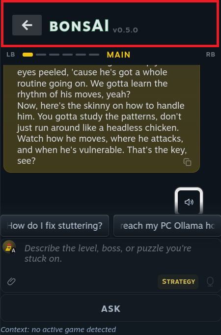

bonsAI · the Quick Access panel · measured 8 Oct 2026
Making room for the answer
Updated after round eight. Round eight, more room for the chat's name (you picked X1), is the first section below. Then the design you picked; the build plan is plan 84 in the repo. Every round follows it, newest first, so you can see how each pick was made. Round four's six states show the final design.
The part in your red box is Decky's title bar: the back arrow and the plugin's name. Decky Loader draws it above every plugin. bonsAI can't remove Decky, but it can move its own tab bar up into that bar, or hide the bar while bonsAI is open. Below is what's possible today, drawn at true size from measurements, plus four ideas from further out.
454points tall is all bonsAI gets on the Deck's own screen. On a TV it's 766, and that's where the design notes were measured.
88points go to bars before the chat starts. 50 of them are Decky's.
162points go to the ask area at the bottom. That's the biggest single piece.
204points are left for the answer. That's less than half the panel.
Round eight: more room for the chat's name
Your ask. Fit more characters in the chat's name by using the empty space on the right, while keeping it centred and balanced against the tab bar.
The rule that decides this: to stay centred, the name can only grow by the same amount on both sides, and on the left it stops at Decky's back arrow. So the name itself can't reach into the empty space on the right. Everything else on its line can. Move LT, RT and the menu arrow off the name's line, and the name gets the whole width between the two corners. Every drawing here shows the longest example name, "Second boss, phase two strategy" (31 characters), and counts how much of it fits. Turn on the guides to check the centre line.
Long names:Guides:
X0
Your current pick, for comparison
LT, the name with its menu arrow, and RT share one line between the back arrow and the empty corner.
Room for the name
…
Shows
…
X1
LT and RT move under the name
LT and RT join the small line under the name: "LT · chat 3 of 5 · RT", still one on each side of the centre. The name's line keeps only the name and its menu arrow. The right corner stays empty.
Room for the name
…
Shows
…
Keeps everything you picked except where LT and RT sit. They get smaller, but they are dimmed most of the time anyway.
X2
The menu arrow moves into the right corner
As X1, and the menu arrow leaves the name to become a button in the empty corner, mirroring the back arrow. The name's line holds nothing but the name.
Room for the name
…
Shows
…
The most balanced: back on the left, your chats on the right, the name dead centre. A on the name still opens the menu too.
Changes one pick: the corner is no longer empty.
X3
As X2, with slimmer corner buttons
bonsAI draws Decky's back arrow 28 points wide instead of 40, and the menu button to match, so both corners give the name 12 points each.
Room for the name
…
Shows
…
Catch: it restyles Decky's own button, the same kind of reach as hiding Decky's bar, so it joins that Deck test. The back arrow is still 28 tall, the same height as today.
You picked X1, with long names scrolling while the ring is on them. The design you picked, below, now uses it: move the ring to "Chat's name" to see a long name scroll.
"Scroll slowly" is an extra that works with any of them: a name too long to fit slides along once so you can read the rest, then comes back. On the Deck it would only move while the ring is on the name. bonsAI's suggestion chips already do this with long questions.
The design you picked
Answer area
…
Words you can see
…
Tabs in the top strip, the 20 points that today are Steam's empty margin plus the top of Decky's bar. T3: the tab's icon and name in the middle, the other tabs as small dimmed icons on each side, LB and RB at the ends. No drop-down icon strip.
The chat's name beside Decky's back arrow, centred under the tab's name, with empty space on the right to balance the arrow. No shading. LT and RT sit on the small line under the name ("LT · chat 3 of 5 · RT") and switch chats; the arrow after the name opens the chats menu. About 20 characters fit; a longer name slides along to show the rest while the ring is on it.
The hints dim: LB and RB light up only while the ring is on the tab bar, and LT and RT only while it's on the chat's name.
The chats menu holds the list of chats and New chat, Rename chat, Sum up this chat, Save to Desktop note and Delete chat. The saved-chats row at the top of the chat goes away.
On the other tabs the row with the back arrow and chat name is hidden completely.
The ask area: the big ASK button becomes a small one in the box's bottom strip, and the context line becomes a small game tag there.
Read aloud sits in the answer's lower-left corner, opposite Copy.
The version number moves to the About tab.
Reading mode gets a test to find out, separately.
Built for the Deck's own screen first. The answer gets …, about … words, against 204 points and … words today.
Round seven: where Read aloud goes
Your round-six answer. U3: empty space balances the back arrow. No shading behind the chat's name. LB, RB, LT and RT dim whenever the ring is somewhere else. Then this round: Read aloud.
The button hints now dim. LB and RB light up only while the ring is on the tab bar, and LT and RT only while it's on the chat's name. Elsewhere all four fade back. The switch below moves the ring in every drawing from round four onwards. The white outline shows where the ring is.
Where's the ring?
Read aloud today has a row of its own under the newest answer: a 32-point button plus an 8-point gap. Each drawing below moves it somewhere that already exists, so the row goes. The answer area stays 297 points in all of them; what changes is how much of the answer fits in it.
W0
Today: a row of its own
The layout so far, with Read aloud where it is now, for comparison.
Answer area
…
Words you can see
…
W1
In the answer's corner, beside Copy
The answer already has a small Copy icon in its bottom corner. Read aloud sits next to it, so the two things you can do with an answer sit together.
Answer area
…
Words you can see
…
Small target for touch, the same size as Copy today. With the D-pad, it's a stop at the end of the answer.
W2
In the ask box, beside the mic
Voice in and voice out sit side by side: the mic to ask by voice, the speaker to hear the newest answer.
Answer area
…
Words you can see
…
Always in the same place, even while you scroll back through older answers. It reads the newest one.
Catch: one more icon in an already busy strip.
W3
Floating over the answer's corner
A round button floats over the bottom corner of the answer area, like a "play" button on a video.
Answer area
…
Words you can see
…
Easy to tap, but it covers a few words of the last line. The count leaves those out.
W4
On the line above the answer
The "Show reasoning" line above each answer has room on its right. Read aloud sits there.
Answer area
…
Words you can see
…
Catch: on a long answer, that line scrolls out of view at the top, so the button is gone when you're reading the end.
Round six: lining up the chat's name
Your round-five answer. T3, the other tabs' icons around the name. Make the chat's name longer, and make sure it lines up and looks balanced, because Decky's back arrow pushes things off centre.
The fix is to balance the arrow, not move it. The back arrow belongs to Decky and has to stay on the left, so each drawing puts something the same size on the right. The tab bar's edges also move in to match Decky's bar, 16 points from each side. Now LB sits over the back arrow, RB sits over the right-hand button, and the tab's name and the chat's name share one centre line. The chat's name gets a long pill between the two buttons, with LT and RT at its ends. Press LT or RT to reach "Second boss, phase two strategy" and see how a long name fits.
Alignment guides:
U1
New chat balances the arrow
A New chat button, the same size as the back arrow, sits on the right. The chat's number goes in small type under its name.
Useful: New chat becomes one press away, so it doesn't have to live in the chats menu.
U2
The chat's number balances the arrow
A box the same size as the arrow shows which chat you're on, like 1/5. The name gets the whole pill to itself.
Room for the longest name, in one larger line. The box isn't a button, just a readout.
U3
Empty space balances the arrow
Nothing on the right, just a gap the arrow's width, so the name still sits on the centre line.
Simplest, but the gap can look like something is missing.
You picked U3. Round four's six states below use T3 with the edges lined up, and this switch:
Round five: a balanced tab bar, no icon strip
Your round-four answers. On the other tabs, hide the row under the tabs completely. Make the thin tab bar balanced; today it leans to the left. Consider dropping the fuller strip of tab icons, and put the tab's icon next to its name instead. Read aloud comes in the round after this one.
Four balanced bars, each drawn in the full panel and in a close-up. All four are the same 20 points tall, put the current tab's icon beside its name in the middle, and keep LB and RB at the two ends. LB on the first tab already wraps round to the last, so a bar can show the neighbours on both sides. Click LB or RB on any of them to feel how it moves. Icons here are stand-ins for the plugin's own: the bonsAI logo, Ollama's llama, a gear, a lock, a bug, and an info sign.
T1
The name rides along the dots
Today's bar, centred: one dot per tab, and the current tab's dot becomes its icon and name.
Shows your place in the row of tabs. The name slides left and right as you switch.
T2
Name in the middle, dots under it
The icon and name stay dead centre. A tiny row of dots under them shows which tab of six you're on.
Calmest: nothing moves sideways. The text is a little smaller to fit the dots underneath.
T3
The other tabs' icons around the name
The name stays centred. The other tabs sit beside it as small, dimmed icons: the ones LB reaches on the left, the ones RB reaches on the right, wrapping round.
Keeps the strip's icons, inline and with no strip. Always balanced: two icons on one side, three on the other.
T4
Neighbours by name
The name stays centred, and the tab LB would open and the tab RB would open are named, dimmed, beside each button.
Keeps the strip's job: the icon strip existed so you could see where a shoulder press would take you. This does it in words, with no strip.
Dropping the icon strip also drops a known bug. The strip has been seen stuck half-faded over the chips (the "ghost strip"), because its fade can freeze while a game runs. No strip, no ghost.
Touch: today, tapping the thin bar opens the strip so you can tap a tab. Without it, you tap LB or RB, or the left or right half of the bar.
You picked T3. Round six, above, lines it up with the chat's name.
Round four: tabs in the top strip, your chat under them
Your round-three answers. Move the tabs up into the unused strip above them, and put the chat's name underneath, next to Decky's back arrow. Open the chats menu with an arrow on the name. Move Read aloud in a later round. One more mockup round first, showing the layout in its different states.
It fits exactly. The unused strip is Steam's 14-point top margin plus the 6 points of padding at the top of Decky's bar. That's 20 points, and the tab bar is 20 points tall. The chat's name then takes the tabs' old spot beside the back arrow. Total room matches L: … for the answer, … words visible, versus 204 points and … words today.
Piece
How sure
Why
Chat's name beside the back arrow
Decky supports this
It's Decky's own spot for a plugin's title, the one "bonsAI v0.5.0" uses today.
Tabs up in the top strip
Needs a Deck test
The strip is Steam's margin, not Decky's or ours. bonsAI can either draw the tabs reaching up out of Decky's bar, which works only if Steam doesn't cut off anything that sticks out, or shrink the margin while bonsAI is open and put it back when you leave.
LT and RT switch chats
Needs a Deck test
The same trigger test as before. Without it, the menu and Left/Right on the name still work.
Decky's bar on the other tabs
Your call
Decky's bar sits outside bonsAI's tabs, so whatever is in it shows on every tab. See the last drawing.
R1
Reading an answer
The everyday state. LB and RB switch tabs, LT and RT switch chats, and the name opens the chats menu.
Answer area
…
Words you can see
…
R2
While an answer is being written
The mic turns into Stop, as it does today, and the small ASK button rests until the answer finishes.
R3
A new, empty chat
The logo and today's empty-chat line fill the answer area. The name reads "New chat" until the first question.
R4
The chats menu, open
It drops down from the name and covers the answer, leaving the ask box in view. Click the name to close it.
R5
The ring on the tab bar
Updated for round five: with the icon strip gone, the bar simply lights up while the ring is on it. Left and Right, or LB and RB, switch tabs; Down goes to the chat's name.
R6
On another tab
Needs the hide test
Updated for your answer: off the chat tab, the row under the tabs is hidden completely, so Settings starts right under the tab bar. LB and RB here walk the other tabs.
The back arrow goes with it on these tabs. B still goes back to Decky's list. People using touch would go back to the chat tab first.
It's Decky's bar, so this needs the same Deck test as hiding it (option C): showing it on the chat tab and hiding it on the rest.
The ring's path changes. Today, Up from the tab bar goes to Decky's back arrow. In this layout the arrow sits below the tabs, so the order from the top is: tabs, then the back arrow and the chat's name, then the answer.
Touch: at 20 points tall, the tab bar is a small target, but tapping it opens the fuller strip, as it does today, with big icons to tap.
Read aloud still takes a 32-point row under the answer. Parked for a later round, as you said.
Round three: tabs on top, your chat down by the answer
Your round-two answers. The tab bar stays on top in Decky's bar, with LB and RB, as today. The chat's name moves down near the answer, and LT and RT switch chats if the Deck passes them through. The gear becomes an icon that fits a chats menu. The room should match L.
To match L's room, the chat name can't have a row of its own. So each drawing below puts it in a spot that already exists. The other-tabs question mostly goes away: the chat name is part of the chat screen, so Settings and the rest don't show it, and LT and RT can simply do nothing there. If LT and RT don't reach bonsAI, chats still switch from the menu, or with Left and Right while the ring is on the name.
Chats menu icon:
"Arrow on the name" means no separate icon. You press A on the chat's name, or tap it, to open the menu. That also saves the most width.
N
Floating at the top of the answer
Needs the trigger test
The chat's name floats over the top edge of the answer, right under the tabs. It takes no row, but it covers a few words of the oldest visible line. Click LT or RT to switch chats, and the name or icon to open the menu.
Answer area
…
Words you can see
…
Closest to M, minus M's row. The word count leaves out the words hidden behind the name.
Could fade while an answer is being written and come back when you press LT or RT. That fits the reading-mode test.
O
Under the answer, beside Read aloud
Needs the trigger test
The newest answer already has a row under it holding only the Read aloud button, on the right. The chat's name takes the empty left side of that row.
Answer area
…
Words you can see
…
Free room: the row is already there.
Catch: that row belongs to the newest answer and scrolls with it today. It would have to stay put at the bottom of the answer area.
P
At the start of the chips row
Needs the trigger test
The chat's name sits fixed at the left of the suggestion chips. The chips slide along beside it.
Answer area
…
Words you can see
…
Free room, and it never covers the answer.
Catch: one suggestion fits instead of two. It also mixes two different things in one row, your chat and suggested questions.
Q
Inside the ask box
Needs the trigger test
The chat's name sits in the box's bottom strip, like the "To:" line of an email: you can see which chat you're asking in. The game tag moves to the box's top corner.
Answer area
…
Words you can see
…
Free room, and it reads well: the name sits right where you type.
Catch: the strip gets crowded. Long chat names get cut short, and the count (1/5) is dropped to fit.
Round two: hybrids of E and F
Your answers so far. Top: a mix of E and F, with your chat front and center, LB and RB at its ends, a gear for the chats, and the six tabs kept and quick to reach. Ask area: fold both the big ASK button and the context line into the box (D). Screen: the Deck's own screen first. Outside the box: reading mode (G) is worth a test.
One thing decides these hybrids: if LB and RB switch chats, something else has to switch tabs. Today LB and RB switch tabs anywhere in bonsAI, except on the saved-chats row, where they switch chats. bonsAI doesn't use the triggers (L2 and R2) at all. Decky's own button list includes them, but nobody has checked whether Steam's menu passes them through to a plugin.
LB and RB
L2 and R2
Room for the answer
Needs a Deck test?
K Chat on top, tab row under it
Chats, always
Tabs, always
…
Yes: do L2 and R2 reach bonsAI?
L Chat and tabs share Decky's bar
Chats, always
Tabs, always
…
Same test
M Tabs on top, chat row under them
Tabs, or chats while the ring is on the chat row (today's rule)
Not used
…
No
K
Chat on top, tab row under it
Needs the trigger test
Decky's bar shows your chat: LB, the chat's name, RB, and the chats gear. Today's thin tab bar stays under it, with L2 and R2 at its ends. Click LB or RB for chats, L2 or R2 for tabs, and the gear for the chats menu.
Answer area
…
Words you can see
…
One press each: shoulders for chats, triggers for tabs, wherever the ring is.
Cost: keeps a 20-point tab row, so 20 points less than E.
If the triggers don't reach bonsAI, this falls back to M's rule.
L
Chat and tabs share Decky's bar
Needs the trigger test
Same buttons as K, but the tab dashes sit in a tiny line under the chat's name, inside Decky's bar. No row of its own. Same clicks as K.
Answer area
…
Words you can see
…
As much room as E and F.
Cost: the tab names get very small (8 points). Permissions and Developer show as "perms" and "dev", the short words the open tab strip already uses.
M
Tabs on top, chat row under them
No test needed
E's tabs in Decky's bar, then a slim chat row that stays put: LB, the chat's name, RB, and the chats gear. LB and RB do what they do today. Click LB or RB on either row.
Answer area
…
Words you can see
…
Familiar: it's today's rule. LB and RB switch tabs, or chats while the ring is on the chat row.
Cost: two rows of LB and RB marks that mean different things, and the chat row costs 26 points.
Your chat isn't at the very top, but it's always on screen, unlike today's saved-chats row, which scrolls away.
The chats gear in all three holds what the saved-chats row does today: every chat (an unread dot on any with a reply waiting), New chat, Rename chat, Sum up this chat, Save to Desktop note and Delete chat. LB past your newest chat still reaches New chat, as it does today. With all that in the gear, the saved-chats row at the top of the chat goes away.
Where the height goes today

Steam's top strip 14
Decky's title bar 34
Decky's gap 16
bonsAI tab bar 24
The answer 204
Ask area: chips, box, ASK button, context line 162
Part, top to bottom
Points
Who draws it
Can bonsAI change it?
Empty strip at the top
14
Steam
Only by reaching into Steam's own menu. Possible, but riskier. Outside-the-box only.
Title bar: back arrow and "bonsAI v0.5.0"
34
Decky
Fill it: yes. Decky gives each plugin the spot right of the arrow. That's how the bonsAI name gets there today. Hide it: probably. Needs a Deck test.
Empty gap under the title bar
16
Decky
Yes. bonsAI can slide its own content up over it without touching Decky.
Tab bar: LB, dashes, MAIN, RB
20 + 4
bonsAI
Yes, all ours.
The answer
204
bonsAI
This is what we're trying to grow.
Ask area
162
bonsAI
Yes, all ours. Chips 30, box 73, ASK button 37, context line 18, small gaps.
B still goes back if the bar is hidden. Decky makes the B button close any plugin, so nobody gets stuck. People using touch would need a back arrow of ours.
It also fixes a focus trap. The D-pad ring has landed on Decky's back arrow before, and LB and RB do nothing while it's there. With the tabs beside the arrow, you can see where the ring went. With the bar hidden, the trap is gone.
It helps the planned menu icon too. If bonsAI gets its own menu icon through Quick Tab, the same bar shows up there with no back arrow at all. Then the whole bar is wasted space, so every option below helps there as well.
The handheld is the tight case. The plugin is 300 points wide on both screens, but only 454 tall on the Deck's own screen versus 766 on a TV. That's why it feels cramped in your hands.
Click LB or RB in any drawing to switch tabs.
The comparison, measured from the drawings
Where the height goes, top to bottom
Steam's stripDecky's bar and gapbonsAI's tab bar or headerThe answerAsk area
The number on the right is the answer's height in points, and the change from today.
How much of a long answer you can see at once
Words of the same 180-word answer that fit on screen without scrolling. Counted on these drawings; this page's font is close to Steam's but not identical, so treat it as a guide.
Realistic: could be built now
B and C fix the top. D fixes the bottom. E and F are complete proposals that combine them.
A
Today
Drawn from the live Deck and your screenshot. Slide to fade the drawing into your real photo and check they match.
DrawingPhoto
Answer area
…
Words you can see
…
B
Tabs move up into Decky's bar
Decky supports this
The tab bar moves into Decky's bar, next to the back arrow, where "bonsAI v0.5.0" sits today. bonsAI also slides up over Decky's empty gap.
Answer area
…
Words you can see
…
How: Decky's own spot for plugin titles. Sliding over the gap happens inside bonsAI's own box.
Cost: the bonsAI name and version leave the top. The version moves to the About tab. The dashes get a little narrower to fit.
Keeps Decky's own back arrow, so nothing about leaving bonsAI changes.
C
Hide Decky's bar, draw our own slim one
Likely, needs a Deck test
Decky's bar is hidden while bonsAI is open and comes back when you leave. bonsAI's own 28-point header carries a small back arrow and the tabs.
Answer area
…
Words you can see
…
How: Decky has no setting for this. bonsAI would reach outside its own box, the same kind of reach it already makes to keep the panel's height steady.
Only 8 points more than B, because a touch-friendly back arrow still needs a row of its own.
Risk: a Decky update could undo the trick. Built carefully, you'd just see today's bar again.
D
A lighter ask area
All bonsAI's own
The big ASK button becomes a small ASK button in the box's bottom strip, next to the mode and the mic. The "Context: …" line becomes a small game tag in that same strip.
Answer area
…
Words you can see
…
The biggest single win: two whole rows go, and nothing else moves.
Cost: a smaller ASK target. The big button also turns into Stop during an answer, and the small one must do the same.
D-pad: today Down from the box lands on ASK. That path needs a new stop in the strip and a fresh walk on the Deck.
E
B and D together: keep the six tabs
Can be built now
The biggest gain that keeps everything where people expect it. Tabs sit beside Decky's arrow; the ask area loses two rows.
Answer area
…
Words you can see
…
Swap B for C here to get 8 more points, if the Deck test for hiding the bar goes well.
F
Simplest: one gear instead of six tabs
Tech is sure; it's a design call
Decky's bar holds your chats: the chat's name with arrows, New chat, and a gear. Decky's own plugin list already puts store and gear buttons in this bar, so it matches. The five setup tabs live behind the gear as one list. The ask area is D's. Click the gear to try it.
Answer area
…
Words you can see
…
Simpler: one screen to live in. Where AI runs, Settings, Permissions, Developer and About are setup screens most people open rarely.
LB and RB always switch chats. Today they switch tabs on the tab bar and chats on the chats row.
Also removes the saved-chats row at the top of the chat, because it moves up into the bar.
Cost: the biggest change to how people get around, and a full D-pad walk on the Deck.
Outside the box: ideas to think with
Not ready to build. Each one solves the height problem in a different way, so it's worth seeing what it would feel like.
G
Reading mode
Possible; big behaviour change
While an answer is on screen, everything else folds away. No bars at the top, and the ask area shrinks to one "Ask a follow-up" line. The current tab floats as a small tag. Click the follow-up line to unfold the ask area, and the arrow beside the mic to fold it again.
Answer area
…
Words you can see
…
Why not yet: it needs Decky's bar hidden (C), plus clear rules for when things fold and unfold. People could lose track of where the controls went.
H
Tabs down the side
Possible; costs width
A thin icon strip on the left edge, like Steam's own menu icons. No bars at the top at all. The ask area is D's.
Answer area
…
Words you can see
…
Why not yet: width is the scarcer thing in a 300-point column. The answer's lines get shorter, so you gain fewer words than the extra height suggests. The word count above shows the trade.
I
Read long answers full screen
Decky supports full-screen pages
A "Read full screen" button opens the answer as a whole Deck page, the same way Decky opens its own store and settings. B goes back. Drawn at the Deck's full screen size.
Reading area
…
Words you can see
…
Why not yet: it covers the game. Great for a long guide, wrong for a quick look mid-fight. It's an extra, not a replacement for the panel.
J
Answer beside the menu, over the game
Needs a test to find out
The menu keeps the ask area. The answer opens in a wide card over the game, to the left of the menu, where the screen has plenty of room.
Reading area
…
Words you can see
…
Why not yet: Steam's menu page starts at the menu's own left edge (measured today: the extra room it has is off the right side of the screen). So bonsAI can't paint to the left of it from inside. This would need a different layer, like the one Steam uses for notifications.
Simplifying, not just squeezing
Six tabs become one chat screen and a gear (F). Five of the six tabs are setup screens.
Two rows become one strip. The ASK button and the context line fold into the box (D).
The name and version move to About (B, C, E, F). The menu icon already says bonsAI.
The saved-chats row folds into the top bar (F), so LB and RB mean one thing.
Fewer D-pad stops between the answer and the box, in every option that drops the big ASK button.
Decisions for you
Settled so far: tabs in the top strip with LB and RB, drawn as T3 (the other tabs' icons around the name), and no drop-down icon strip. The chat's name beside Decky's back arrow, centred under the tab's name with empty space on the right (U3), no shading, switched with LT and RT if the Deck allows it, with an arrow on the name that opens the chats menu. LB, RB, LT and RT dim unless the ring is on their row. On the other tabs, that row is hidden. The ask area folds the big ASK button and the context line into the box. The Deck's own screen comes first. Reading mode gets a test. Read aloud goes in the answer's lower-left corner, opposite Copy. Nothing is left to pick. What's owed is in plan 84:
Three Deck tests, when you free the DeckDo L2 and R2 reach bonsAI inside the menu? Can the tabs go up into Steam's strip? Can Decky's bar be hidden on the other tabs and put back when you leave?
A test of reading modeSeparate from the build, after it.
How these numbers were made. A point is the unit Steam lays the menu out in. On the Deck's own screen one point is 1.5 screen pixels; on a 1080p TV it's 1.28. Decky's bar (34), Decky's gap (16), Steam's strip (14), the tab bar (20 plus 4) and the panel's size were read live from the Deck on 8 Oct 2026. The ask area's rows were read pixel by pixel from your screenshot. Each drawing on this page then measures itself in your browser, so the charts and stats come from the drawings, not from typed-in sums. Decky's title bar layout was checked against Decky Loader's own source. Corrected in the final version: earlier versions drew the answer text inside the cards at about 15 points instead of the Deck's 12, so every "words you can see" count shown during rounds one to seven was too low (today read 50, really about 62; the final design read 100, really about 121). The heights in points were right throughout.